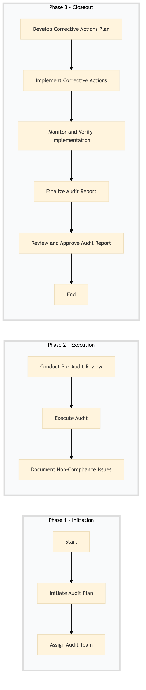

| Role | Steps |
|---|---|
| Compliance Officer | 1.1 1.2 3.1 3.4 3.5 |
| Audit Team Leader | 2.1 2.3 |
| Audit Team Members | 2.2 |
| Hotel Management Team | 3.2 |
| Hotel General Manager | 3.5 |
| Step | Name | Role | System | Input | Output | KPI | Dec? | Exc? | Pain Point / Risk |
|---|---|---|---|---|---|---|---|---|---|
| 1.1 | Initiate Audit Plan | Compliance Officer | Oracle OPERA Cloud | Audit checklist template | Customized audit plan | Less than 2 hours | N | Y | Updating the audit checklist for new compliance regulations |
| 1.2 | Assign Audit Team | Compliance Officer | Oracle OPERA Cloud | Audit plan | Assigned team members and roles | Less than 30 minutes | N | Y | Ensuring all necessary skills are covered in the audit team |
| 2.1 | Conduct Pre-Audit Review | Audit Team Leader | Oracle OPERA Cloud, IDeaS G3 RMS | Customized audit plan | Pre-audit report | Less than 1 hour per team member | N | Y | Gathering all necessary data from multiple systems |
| 2.2 | Execute Audit | Audit Team Members | Oracle OPERA Cloud, IDeaS G3 RMS, SynXis CRS | Pre-audit report | Audit findings and observations | Less than 1 day per team member | N | Y | Ensuring thorough coverage of all compliance areas |
| 2.3 | Document Non-Compliance Issues | Audit Team Leader | Oracle OPERA Cloud, IDeaS G3 RMS | Audit findings and observations | Non-compliance report | Less than 2 hours | N | Y | Classifying issues into different categories for prioritization |
| 3.1 | Develop Corrective Actions Plan | Compliance Officer | Oracle OPERA Cloud, IDeaS G3 RMS | Non-compliance report | Corrective actions plan | Less than 1 day | N | Y | Aligning corrective actions with Marriott's compliance policies |
| 3.2 | Implement Corrective Actions | Hotel Management Team | Oracle OPERA Cloud, IDeaS G3 RMS, SynXis CRS | Corrective actions plan | Implementation status report | Less than 2 weeks per action | N | Y | Coordinating across different departments for implementation |
| 3.3 | Monitor and Verify Implementation | Compliance Officer | Oracle OPERA Cloud, IDeaS G3 RMS | Implementation status report | Verification report | Less than 1 week | N | Y | Ensuring all corrective actions are fully implemented |
| 3.4 | Finalize Audit Report | Compliance Officer | Oracle OPERA Cloud, IDeaS G3 RMS | Verification report | Final audit report with recommendations | Less than 1 day | N | Y | Summarizing all findings and providing actionable insights |
| 3.5 | Review and Approve Audit Report | Hotel General Manager | Oracle OPERA Cloud, IDeaS G3 RMS | Final audit report with recommendations | Approved audit report | Less than 2 days | Y | N | Ensuring all stakeholders' concerns are addressed |
A structured process document for SC-CL-04 — Brand Standard Compliance Audit at a Marriott full-service hotel. This audit ensures adherence to safety, security, and compliance standards using various Marriott systems.